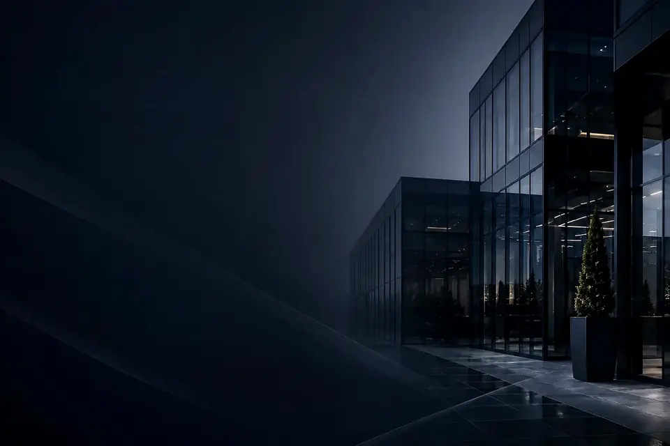

Büroreinigung
Arbeitsplätze, Besprechungsräume, Küchen und Sanitärbereiche, regelmäßig nach festem Plan.
Zur Büroreinigung
Reinigung mit Anspruch
König Gebäudereinigung reinigt Büros, Praxen, Studios, Treppenhäuser und Gewerbeflächen in Würzburg und Umgebung. Mit klaren Absprachen und einem Ansprechpartner, der Ihr Objekt kennt.
Leistungen
Von der laufenden Unterhaltsreinigung bis zum einmaligen Einsatz nach einer Renovierung. Jede Leistung ist auf einer eigenen Seite ausführlich beschrieben.
Arbeitsplätze, Besprechungsräume, Küchen und Sanitärbereiche, regelmäßig nach festem Plan.
Zur Büroreinigung
Wartebereiche, Behandlungsräume und Sanitärräume für Arzt- und Therapiepraxen.
Zur Praxisreinigung
Stufen, Geländer, Eingänge und Kellerflure für Hausverwaltungen und Eigentümer.
Zur Treppenhausreinigung
Fenster, Glastüren, Trennwände und Schaufenster, streifenfrei und mit Rahmen.
Zur Glasreinigung
Einmalige Einsätze nach einem Umbau, vor einem Einzug oder für stark verschmutzte Böden.
Zur GrundreinigungAuch Sanitärreinigung und die materialgerechte Bodenreinigung gehören dazu. Den vollständigen Überblick finden Sie hier:
Einblicke
Der erste Eindruck entsteht am Eingang: an der Glastür, am Boden im Empfang, im Waschraum, den Ihre Gäste benutzen. Wer dort Sorgfalt sieht, traut Ihnen auch den Rest zu.

Warum König Gebäudereinigung
Wir sind ein inhabergeführter Betrieb aus Würzburg. Das merken Sie an kurzen Wegen und an Absprachen, die gelten.
Sie sprechen direkt mit dem Inhaber. Fragen und Änderungen landen bei der Person, die Ihr Objekt kennt.
Was im Reinigungsplan vereinbart ist, wird erledigt, und zwar zum vereinbarten Termin.
Umfang und Rhythmus richten sich danach, wie Ihre Räume genutzt werden und wie groß sie sind.
Wir arbeiten in Räumen mit vertraulichen Unterlagen und Patientenkontakt. Zurückhaltung gehört dazu.
Über uns
Was als familiengeführtes Unternehmen begann, ist heute ein Reinigungsdienstleister für Unternehmen, Praxen und Hausverwaltungen in Würzburg. Geführt wird König Gebäudereinigung von Leart Spahiu, der jedes Objekt persönlich betreut.
Mehr über unsEinsatzgebiet
Unser Schwerpunkt ist die Stadt Würzburg mit ihren Stadtteilen. Objekte im Umland übernehmen wir ebenfalls. Fragen Sie einfach an, wir sagen Ihnen offen, ob die Anfahrt zu Ihrem Standort passt.
Termine und Besichtigungen vereinbaren wir telefonisch oder per E-Mail, ganz wie es Ihnen lieber ist.
So läuft die Zusammenarbeit abGut zu wissen
Das fragen uns Unternehmen und Hausverwaltungen, bevor sie zum ersten Mal eine Gebäudereinigung beauftragen. Weitere Antworten stehen unter Häufige Fragen.
Eine Gebäudereinigung arbeitet nach einem schriftlich vereinbarten Leistungsverzeichnis und stellt ordentliche Rechnungen. Sie haben einen Vertragspartner mit festen Absprachen statt einzelner mündlicher Vereinbarungen.
Nein. Unterhaltsreinigung, Fenster und gelegentliche Sonderreinigungen lassen sich in einem Angebot zusammenfassen. So bleibt die Abrechnung übersichtlich.
Das hängt vom Umfang und von unserer Planung ab. Sobald das Angebot angenommen und der Zugang geklärt ist, vereinbaren wir mit Ihnen den ersten Termin.
Art und ungefähre Größe des Objekts, die gewünschten Leistungen und den Rhythmus. Fotos oder ein Grundriss helfen, sind aber kein Muss.
Rufen Sie an oder schreiben Sie uns, welche Räume gereinigt werden sollen und wie oft. Sie bekommen ein unverbindliches Angebot für Ihr Objekt in Würzburg und Umgebung.